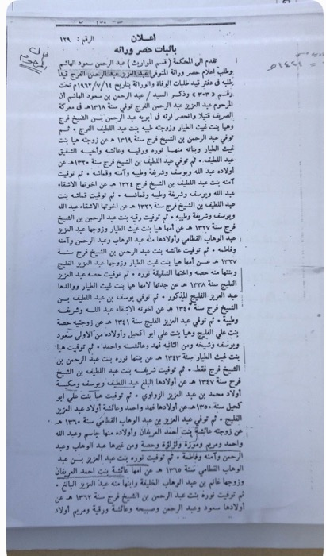

Abdulaziz died 1360 AH (1941); announced 1962 · Court announcement no. 129, inheritance section, heirs register
Court heirs announcement: Abdulaziz bin Abdulwahab Al-Qatami, his two wives and his children
What it is
Abdulrahman Saud Al-Hashem asked the court, by request no. 303 of 14 July 1962, to record the heirs of Abdulaziz Abdulrahman Al-Faraj, killed at the Battle of Al-Sarif in 1318 AH. The chain of deaths that follows runs through our family: Rugaya bint Abdulrahman bin Al-Sheikh Faraj died in 1327 AH, leaving her husband Abdulaziz Abdulwahab Al-Qatami and their children Abdulwahab, Abdulrahman, Amna and Fatima. Abdulaziz bin Abdulwahab Al-Qatami died in 1360 AH, leaving his wife Aisha bint Ahmad Al-Oraifan and their children Jassim, Abdullah, Ahmad, Mariam, Moza, Lolwa and Hessa, and from his other wife Abdulwahab, Abdulrahman, Amna and Fatima. Noura bint Abdulaziz bin Abdulwahab Al-Qatami died in 1365 AH, leaving her mother Aisha Al-Oraifan, her husband Ghanim bin Abdulwahab Al-Khalifa and their son Abdulaziz.
Why it matters
An official court record that proves both of Abdulaziz's marriages and lists every one of his children by each wife, matching the tree and the Ma’alim lineage note. It also dates his death to 1360 AH and Rugaya's to 1327 AH. Mohammed is not among the heirs, which fits his death in March 1939, before his father.
Who is meant
The record gives the full name Abdulaziz bin Abdulwahab Al-Qatami and names both wives and all eleven children exactly as they are in our tree.
Page copies

Original text
English translation
Notes
Only the passages naming our family are quoted; the rest of the announcement traces the Al-Faraj, Al-Fulaij and Al-Zawawi heirs. 1327 AH is 1909 to 1910, 1360 AH is 1941 to early 1942, and 1365 AH is 1945 to 1946. 1319 AH is 1901 to 1902, and 1343 AH is 1924 to 1925.
Others named
Sources
Court announcement of an heirs register, 1962. A copy is saved in the family Drive. The same page was posted by Dr Sami Al-Faraj on X on 20 April 2018. The newspaper or gazette that printed it, and its date of publication, are not yet known; 14 July 1962 is the date of the court request, not of publication.
Archive reference
- Court announcement no. 129, request 303, 14 July 1962 · إعلان بإثبات حصر وراثة
How this text was made: Typed by Claude from the photo. English translation by Claude; please review.
Open in the interactive site